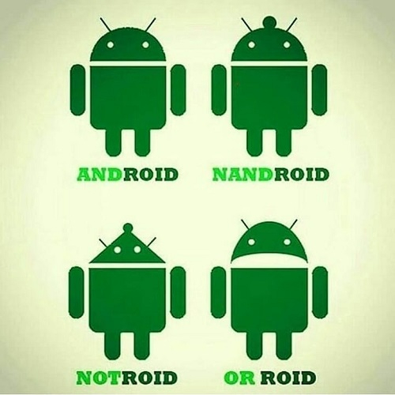

00. Link - Standardizing WASI: A system interface to run WebAssembly outside the web
01. Link - Upcoming WebHID API - access Bluetooth/USB HID devices in web applications
02. Link - Web Components will replace your frontend framework
03. Link - A horrifying globalThis polyfill in universal JavaScript
04. Link - Rendering a Triangle with Vulkan and JavaScript
05. Link - Javascript debuggers are broken, and it's our fault.
06. Link - Why OO Sucks
07. Link - Co jest najważniejsze w programowaniu
08. Link - You should never ever run directly against Node.js in production. Maybe.
09. Link - Introducing Node.js 12
10. Link - Introducing Mozilla WebThings
11. Link - Optimizing Performance With Resource Hints
